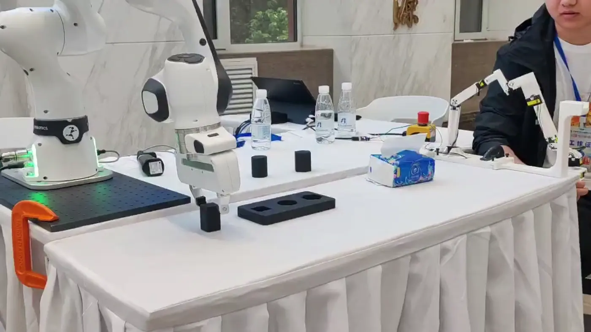

跨形态手部映射
探索人手与不同机器人手之间的运动对应，以及面向物体的连续抓握迁移。
研究进行中
围绕形态、任务结构与视觉反馈，探索更可靠的机器人操作。
探索人手与不同机器人手之间的运动对应，以及面向物体的连续抓握迁移。
研究进行中结合任务约束与模仿学习，研究策略的精细操作能力和跨场景迁移。
研究进行中探索跨视角点跟踪与局部视觉表征，为操作任务提供持续的视觉反馈。
研究进行中连接激励轨迹、机器人模型与可视化，推进辨识流程和对比实验。
开发与验证中以上为当前研究方向；已公开的材料见对应项目网站。

从仿真，走向真实控制。
连接运动控制、MuJoCo 仿真与浏览器可视化，将机器人系统的各个环节放在同一条工作流中。
在线入口提供 Talon 模型预览；实时仿真控制尚未开放。
机器人技能、遥操作与系统集成的实验演示。
面向自主化学实验室的移动操作系统。
通过主端操作接口控制真实机械臂。
双臂操作、运动控制与物理仿真。
Jincheng Sun, Yiwen Zhao, et al.
论文与项目页面Inventors: Zhao Yiwen, Sun Jincheng, Luo Yang, Wang Xiao, Jiang Yunxiang, Zhao Xingang, Song Zhiyuan
China Patent CN2025112876147 • filed 2025
Inventors: Zhao Yiwen, Sun Jincheng, Luo Yang, Wang Xiao, Jiang Yunxiang, Zhao Xingang, Zhou Yishu
China Patent CN202510287663.4 • filed Mar 12, 2025 / published Jul 4, 2025
Inventors: Zhao Yiwen, Sun Jincheng, Luo Yang, Wang Xiao, Jiang Yunxiang, Zhao Xingang, Zhou Yishu
China Patent CN202510287669.1 • filed Mar 12, 2025 / published Jul 4, 2025
Inventors: Zhao Yiwen, Sun Jincheng, Luo Yang, Jiang Yunxiang, Jiang Chao, Wang Xiao, Zhao Xingang, Zhou Yishu, Xue Pengwang
China Patent CN202410606236.3 - May 16, 2024
Inventors: Ye Dan, Sun Jincheng
China Patent CN202510212320.1 - May 2, 2025
Inventors: Zhao Yiwen, Sun Jincheng, Luo Yang, Jiang Yunxiang, Jiang Chao, Wang Xiao, Zhao Xingang, Ke Fengshi, Hu Mengjian
China Patent CN202410495451.0 - Apr 24, 2024
Inventors: Zhao Yiwen, Sun Jincheng, Wei Rensong, Luo Yang, Jiang Yunxiang, Zhang Yuanlin, Gao Ziqi, Jiang Chao, Zhao Xingang
China Patent CN202210811113.4 - Jan 19, 2024

灵巧操作、轨迹优化与机器人系统。
我是东北大学人工智能方向博士生，在中国科学院沈阳自动化研究所机器人学国家重点实验室开展研究，导师为 Yiwen Zhao 教授。
我的工作围绕灵巧操作、轨迹优化、协同规划、多模态感知和控制架构，近期关注模仿学习与强化学习如何形成结构化的机器人技能。
同时持续开发机器人软件、仿真平台与实验工具，让算法走进可以观察、复现和调试的系统。